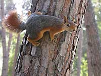

A curious snail

A squirrel from Side
The snail has got bad vision. It mostly smells not watch the surrounding world. The photo was made in Side (Antalia, Turkey). Also I saw the very same species of snails at the North coast of Black Sea in Russia.